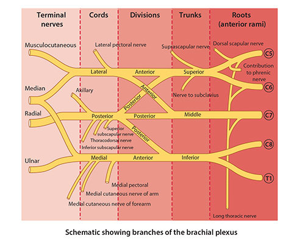

Lab3 - Module 1 - Anatomy of the Arm: Page 9 of 9
Nerves of the Arm
|  |
| Tap on image to enlarge |
| The four nerves of the arm (Median, Ulnar, Musculocutaneous, and Radial) are terminal branches of the Brachial Plexus. |
| Remove the Deltoid and Veins of the arm. |
| The nutrient humeral artery, and the superior and inferior ulnar collateral arteries are not visable in the 3D cadaver. |
| • Injury to the median nerve proximal to the elbow results in loss of sensation on the lateral portion of the palm, the palmar surface of the thumb, flexion of the wrist and fingers, and important movements of the thumb are lost or severely affected. |
| • Injury to the ulnar nerve in the arm results in impaired flexion and adduction of the wrist and impaired movement of the thumb, ring, and little fingers. Characteristic clinical sign of ulnar nerve damage is inability to adduct or abduct the medial four digits. |
| • Injury to the musculocutaneous nerve in the axilla results in flexion of the elbow joint and supination of the forearm being greatly weakened. |
| • Injury to the radial nerve proximal to the origin of the triceps results in paralysis of the triceps brachii, brachioradialis, supinator, and extensors of the wrist, thumb, and fingers, as well as loss of sensation to the skin supplied. Characteristic clinical sign of radial nerve injury is wrist drop, i.e., inability to extend or straighten the wrist. |
Based on what you have just learned, are you suspicious of any of these structures being involved with the above case report? If so, what structures and why? |
|
|
Please take time to list these structures. |
|